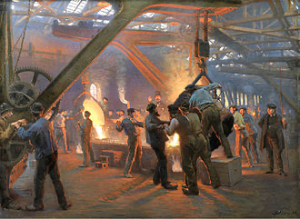

A Critical Earth investigation
Section 0 · Prologue
The history of civilization is anchored by the materials we master. The Stone Age, the Bronze Age and the Iron Age are self-evident for the critical material at the time. The supply chain has always been a question of access to resource. The ground is not the bottleneck — the bottleneck is what happens after mining: refining, trade routing, and who controls the chokepoints.
From salt to semi-conductor

For millennia, salt served as one of the ultimate strategic resources, acting as both a biological necessity and a foundation for global economy and military power; its heavy taxation even became a catalyst for the French Revolution. As human needs evolved, the focus shifted to coal and iron to break the limits of organic power, followed by petroleum, steel and rubber to mobilize a global transport revolution. The invention of the transistor — the move from energy-hungry vacuum tubes to small
integrated circuits — started the search for smaller, faster, cheaper microelectronics.
In 1965, Gordon Moore predicted that transistor counts would double approximately
every two years; a forecast that held true for decades. By the early 1970s, a surging
demand for specialized metals and minerals in microelectronics shifted the global
pursuit of critical materials once more. This began the era of high tech,
where civilizational progress became measured by our ability to manipulate the
periodic table at the atomic scale.
The invention of the transistor — the move from energy-hungry vacuum tubes to small
integrated circuits — started the search for smaller, faster, cheaper microelectronics.
In 1965, Gordon Moore predicted that transistor counts would double approximately
every two years; a forecast that held true for decades. By the early 1970s, a surging
demand for specialized metals and minerals in microelectronics shifted the global
pursuit of critical materials once more. This began the era of high tech,
where civilizational progress became measured by our ability to manipulate the
periodic table at the atomic scale.
The question today is whether the world's market demand for processed critical materials is building two competing supply chains, or creating one fragile system with only a few dominant hubs.
Section 1 · The era of high-tech
The era of high-tech
Today, the bedrock of progress has pivoted toward raw materials like silicon, copper, graphite, cobalt and Rare Earth Elements (REEs), the essential components enabling high-speed processing, artificial intelligence, and the transition to cyber-physical systems. While silicon deposits are relatively accessible, these elements are not technically rare in the earth's crust but they are seldom found in concentrated, mineable quantities. However, extraction involves complex, energy-intensive chemical processing.
This requirement for extreme chemical precision marks a shift in the nature of industrial capacity. It is no longer enough to simply extract minerals; the strategic value now lies in the ability to manipulate matter at the molecular level. Among these critical resources, the Rare Earth Elements stand as the primary example of this complexity, representing a frontier where chemical indistinguishability meets highly specialized utility.
The REE’s serve as essential enabling materials for modern technology, providing the precise physical properties required for everything from green energy to quantum computing. While these seventeen elements are frequently found within the same ore deposits, they are mechanically divided into Light Rare Earth Elements (LREE) and Heavy Rare Earth Elements (HREE) based on their atomic weight and electronic configurations. These elements share nearly identical valence electron shells, making them chemically indistinguishable in a raw state and notoriously difficult to separate.
The Light Rare Earth Elements (LREE) act as the primary industrial workhorses. Lanthanum and Cerium, for instance, dominate the sectors of precision optics and industrial catalysis; Lanthanum is the essential ingredient for high-refractive camera lenses, while Cerium serves as an oxygen storage component in vehicle catalytic converters. This group is also responsible for the optical properties of digital displays, with Europium providing the specific phosphors necessary for color reproduction.
Furthermore, elements like Praseodymium and Samarium provide critical magnetic stability. While Praseodymium reinforces neodymium magnets used in electric vehicle motors, Samarium-cobalt alloys enable high-heat magnets that allow aerospace sensors and defense systems to function in extreme thermal environments where standard magnetic materials would fail.
The Heavy Rare Earth Elements are defined by their scarcity and the phenomenon of lanthanide contraction, which results in smaller atomic radii and higher densities than their lighter counterparts. Erbium, for example, is the critical component in fiber optic amplifiers, amplifying light signals across transcontinental cables. Yttrium and Lutetium represent the frontiers of medical and material science, used in jet turbine coatings and high-density crystals for medical imaging PET scanners.
Ultimately, the mastery of these materials represents the transition from bulk industrial manufacturing to atomic-scale precision. This mastery of the periodic table defines 21st-century sovereignty. The strategic bottleneck is no longer the mine itself, but the high-purity refining needed to transform raw geology into the atomic building blocks of modern infrastructure. In this landscape, securing the downstream supply is the fundamental requirement for national prosperity and strategic autonomy.
Section 2 · The portfolio
Ten materials, one fragile system
A scrolling encyclopedia of the elements at the heart of this story. Start with the rare earths, where a handful of nearly identical metals carry the entire modern magnet industry, then move outward to battery metals, base metals and the precious-metal outlier.
Section 3 · Where they are
Geography is not the bottleneck
The raw materials for the energy transition exist on every continent. Africa, South America, North America, Australia, and Asia all hold significant deposits of the ten elements profiled in the previous section. The geological story is one of abundance and breadth, not scarcity. Critical materials are critical not because the rocks are missing, but because the systems built on top of those rocks — mines, refineries, separation plants, trade contracts — have over decades collapsed into a handful of dominant hubs.
A country that mines a material does not automatically capture its value. And a country with no mines at all can still dominate the supply chain if it controls the refining step. The pattern repeats across nearly every material in this study: deposits are everywhere; chokepoints are not.
The world map below plots 13,723 known deposit locations drawn from the United States Geological Survey's Critical Minerals Geodatabase and the Global Rare Earth Element Occurrence Database. Each point is a documented occurrence — anything from a small historic prospect to a producing mine. Use the layer panel to filter by mineral, switch between dot view and density heatmap, or isolate light and heavy rare earth subgroups.
The visual takeaway is the same whichever filter is selected. The dots fan out across six continents. The story this project chases starts where the map ends — in the refineries, the long-term offtake contracts and the trade networks that decide which of these deposits ever reach a finished product.
Figure 3.1. Global distribution of documented critical material deposits (n = 13,723). Each marker is a single occurrence; marker colour encodes the material and marker opacity its development stage, ranging from active mines (solid) through confirmed reserves and country-level estimates to exploration targets (faded). Stars denote landmark mines profiled in the explainer notebook. The Layers control (top right) toggles individual material families, separates light from heavy rare earths, and switches the radial density heatmap, which is computed with a 500 km cap on cluster spread so that only true concentrations of activity register. The Icons key (bottom right) summarises the opacity scale. Zoom and pan controls (top left) include a wheel-zoom toggle, off by default to preserve page scroll, and a full-screen expander. Sources: USGS Professional Paper 1802 Critical Minerals Geodatabase; USGS Global Rare Earth Element Occurrence Database (2017). Basemap © CartoDB.
Section 3 · Nine mines that shape the world
The landmark sites, one by one
The map's stars mark nine landmark mines — operating, idled, or blocked — that together carry an outsized share of the global narrative for critical materials. Each tells a different version of the same lesson: the deposit is rarely the bottleneck.
Bayan Obo — China, Inner Mongolia · Active
Neodymium · carbonatite-hosted iron-REE
The backbone of China's rare-earth dominance. Scale is unmatched — the processing city built around it is why China controls roughly 90% of global REE refining. Also a major iron-ore operation. Produces primarily light REE (La, Ce, Pr, Nd).
Mountain Pass — United States, California · Active
Neodymium · carbonatite
Supplied most of the Western world's REE through the 1980s, then closed in 2002 when China undercut prices. Reopened in 2017 under MP Materials. Still ships concentrate to China for separation — domestic processing capacity is under construction.
Mt Weld — Australia, Western Australia · Active
Neodymium · supergene-enriched carbonatite
The main non-Chinese supplier of separated rare-earth products to Western markets. World's highest-grade REE deposit (two to three times Bayan Obo). Ore is shipped to Lynas' processing plant in Malaysia for separation. Critical to any Western supply-chain diversification strategy.
Nolans Bore — Australia, Northern Territory · Development
Neodymium · phosphate-REE apatite vein
Largest undeveloped NdPr project in the Western pipeline. REE is hosted in apatite — a phosphate mineral — alongside uranium, requiring complex processing. Feasibility completed 2023; now in financing. If built, would add roughly 10% to non-Chinese NdPr supply.
Kvanefjeld — Greenland, Ilimaussaq complex · Blocked
Dysprosium · peralkaline igneous intrusion
Largest undeveloped heavy-REE deposit globally — currently inaccessible. License revoked in 2021 by the Greenlandic government over opposition to uranium co-mining. A textbook case of environmental and political barriers locking out a major strategic deposit.
Bou Azzer — Morocco, Anti-Atlas Mountains · Active
Cobalt · cobaltite-arsenide hydrothermal vein
The world's oldest continuously operating cobalt mine — running since the 1930s. Most cobalt globally is a byproduct of copper or nickel; Bou Azzer is rare in producing it as the primary product, giving Western buyers a supply option independent of DRC politics.
Tenke Fungurume — DRC, Lualaba Province · Active
Cobalt · stratiform Cu-Co (Copperbelt)
The single largest cobalt producer on Earth — about 15% of global annual supply. Originally Western-owned (Freeport-McMoRan + Lundin), sold to Chinese CMOC in 2016. CMOC doubled output in 2022–23, flooding the cobalt market and suppressing prices. A focal point of the supply-chain geopolitics story.
Pilgangoora — Australia, Pilbara · Active
Lithium · spodumene pegmatite
Textbook Case 1 supply chain: Australia mines the ore, China refines it. Crushed and shipped as concentrate to Chinese converters who process it into lithium hydroxide for battery cathodes.
Atacama Salt Flat — Chile, Atacama Desert · Active
Lithium · salar brine evaporite
World's largest lithium resource — about 30% of global production and the lowest-cost source globally (~$3,000/t LCE). Brine is pumped from underground aquifers and solar-evaporated over 12–18 months in vast ponds, then processed into lithium carbonate. Part of the Lithium Triangle (Chile, Argentina, Bolivia) holding roughly 60% of global lithium resources.
Section 4 · The materials value chain
Where the bottlenecks sit
A deposit on a map is not the same as a functional supply. Between ore in the ground and usable material in a factory lies a chain of extraction, processing, and refinement – and that chain can concentrate in ways that geology never did. Three stages of that chain each carry a distinct kind of lock: geological, industrial, and chemical. Understanding which lock applies to which material determines what a realistic policy response looks like.
Upstream · The geological lock
The constraint no investment can dissolve
For some materials, the constraint is written into the rock. The ore itself is rare, forming only under specific geological conditions that played out in a handful of places on Earth. No industrial build-out elsewhere changes this – the geology is the constraint. Whoever holds those deposits holds the leverage, regardless of what happens downstream.
Cobalt is the clearest example. The Democratic Republic of Congo accounts for approximately 76% of global cobalt mine production – a consequence of the unique mineralogy of the Central African Copperbelt, a stratiform geological formation with no confirmed equivalent at comparable scale anywhere else. This is not policy or industrial choice; it is geography.
Figure 4.1. Heavy rare earth elements – Dysprosium and Terbium – present a related case. Ion-adsorption clay deposits, the specific laterite type that makes heavy REE recovery feasible at industrial scale, require millions of years of specific tropical weathering to develop. Even full refining capacity built elsewhere would still require ore sourced from the same narrow geography.
Platinum illustrates the category from a different angle: the Bushveld Igneous Complex in South Africa holds roughly 80% of global platinum reserves – a permanent geological fact. But here, unlike cobalt, the country that holds the ore largely controls its processing too. It is a useful reminder that a geological lock does not automatically mean supply insecurity – only that the leverage is geological rather than industrial.
One escape from the geological lock is to look elsewhere — literally below the ocean floor. Norway built much of its wealth from North Atlantic seabed oil and is now backing a national initiative to search for critical materials at the seabed, with quiet support from other Western governments. The environmental consequences for those underwater ecosystems are still poorly understood, and organisations like Greenpeace warn that the cost of this option may be paid in damage that cannot be reversed.
For geologically locked materials, the honest policy response is not build more refining capacity. It is: stockpile, invest in material substitution, and accept managed dependence where no alternative exists.
Midstream · The industrial and technical lock
Where the bottlenecks sit
The midstream is where geology ends and industrial strategy begins. Raw ore must be converted into the chemically pure, correctly specified material that factories actually use – and that conversion can concentrate just as decisively as geology, through two distinct mechanisms: deliberate industrial capture and extreme technical difficulty.
Industrial capture. Copper is mined on five continents, yet more than 40% of global refining capacity is found in a single country. Most lithium is extracted in Australia and South America, but the majority becomes battery-grade chemicals in facilities elsewhere. Notably, Japan refines nearly 6% of global copper despite mining essentially none of it. Industrial capture does not require geological ownership – it requires infrastructure, geopolitical strategy, and decades of accumulated investment.
The energy toll. Bridging the purity gap requires a staggering energy investment for a relatively small return of usable material. The battery industry needs graphite at 99.95% purity — far above the 85–92% found in natural flakes — and reaching that level requires specialised furnaces running at 3,000 °C. Producing high-purity copper involves heating impure metal to 2,000 °C before non-recyclable chemical electrolytes strip away the final impurities. Each process demands vast amounts of power and leaves behind hazardous waste as the price of industrial precision.
Figure 4.2. Mining share vs. processing share for four midstream-concentrated materials – Copper, Lithium, Graphite, Rare Earths. Each line tracks one country's position – where the ore comes from (left axis) to where it is refined (right axis). China lines climb on every panel. Sources: USGS Fact Sheet 2025-3038; USGS Mineral Commodity Summaries 2025.
The chemical lock. Creating the permanent magnets essential for EV motors and wind-turbine generators requires isolating individual rare-earth elements from a mixed concentrate. Processors must navigate up to 1,500 distinct solvent-extraction stages – akin to separating a carton of mixed juice back into individual fruits – leaving behind vast tailings lakes of acidic waste that Chatham House describes as one of the largest environmental risks of the energy transition. Getting from raw ore to 99.5% pure Nd₂O₃ represents a manufacturing challenge of the first order, and the price premium for doing so reflects it.
The midstream response requires massive capital investment in processing infrastructure and long-term R&D into chemical separation – a timeline measured in decades, not years.
Downstream · The finished product
Who captures the extraction risk — and who captures the value
The downstream is where refined material meets the factory floor. This stage reveals a structural decoupling that runs through nearly every material in this study: the countries and companies that bear the risks of extraction rarely capture the market value of the finished product.
The cobalt trap is the cleanest illustration. The DRC mines 76% of global cobalt as crude hydroxide, bearing the extraction risk, the environmental cost and the human toll. The material ships out as a partially processed export. China refines 80% of it into battery-grade salts and metal, which then flow to cathode and battery manufacturers worldwide. The ore-holder earns the extraction risk; the refiner captures the value.
The same structural logic applies to rare earths. A single ore body – a mixed rare-earth concentrate – yields finished oxides ranging from a few dollars per kilogram for common elements like cerium, to more than $800 per kilogram for terbium. That spread is not scarcity. It is separation: the price premium is the cost of technical stamina, paid at the refining stage.
The downstream response is vertical integration – controlling the full chain from mine to finished product – or product redesign to reduce reliance on the most volatile midstream chemicals.
Embedded energy is the cost the value chain rarely shows on its invoice. Copper demand alone is expected to reach 3.5 million tonnes a year by 2035, and most of that volume will require intensive energy for mining, refining and supply-chain logistics. The International Energy Forum treats this embedded energy as a critical factor in the overall footprint of the green transition. The materials are energy-heavy to extract and process before they reach a factory, and once they do, the products they enable will shape global energy consumption for decades to come.
Section 5 · The supply chain
From rock to product
Section 4 mapped the bottlenecks — where geology, industry and chemistry each lock the flow in place. To trace those locks in sequence, follow the chain. Every one of the focal materials travels through the same five stages between the ore body and the consumer product, and at each stage a different actor takes over.
Figure 5.1. Estimated 2024 price per kilogram of the oxide form of six rare-earth elements drawn from the same family of mixed concentrates. The price spread is roughly eight-hundred-fold – driven not by geology, but by the number of sequential separation stages each oxide requires. Source: USGS Mineral Commodity Summaries 2025.
The schematic below lays out those five stages with the actors and the leverage points named. The diagram does no statistics; it sets the vocabulary for the two data figures that follow.
Each card in the carousel below traces one material across two of those stages — country of mining on the left, country of processing on the right. Flow widths are share of global tonnage at each stage.
How to read each diagram. Each Sankey has three columns. The left column lists mining countries — where the ore comes out of the ground. The right column lists processing countries — where it is refined into a usable industrial material. The two solid bars in the middle are the bridge between those stages: every tonne mined on the left passes through them and emerges in a different country mix on the right. The wider a band, the larger that country's share at that stage. Shifts between left and right are where the supply-chain bifurcation actually happens.
Cobalt is the cleanest illustration: about 70 % of mined cobalt comes from a single country (the DRC, anchored by Tenke Fungurume in Lualaba — the single largest cobalt operation on Earth); 80 % of refined cobalt is processed in a different country (China). The metal physically travels several thousand miles between mine and refinery, and the value it carries rises by an order of magnitude over that distance.
Step through the cards. Some look like cobalt — concentrated geology funnelled into a narrower processing stage. Some look stranger. Platinum's mining sits 70 % in South Africa but its processing fans out across seven countries with no single one above 50 %. Graphite is mined across China, Mozambique and Brazil, but every commercial-grade refined gram comes through Chinese facilities. Gallium is 98 % to 98 % at both stages — there is no second supplier on either side of the chain.
Section 5.2 · Per-material supply chains
Each material, its own shape of dependency
Seven materials, seven 2023 supply chains. Mining countries on the left, processing countries on the right; the trunk between them is the material itself. Use the chips, the arrows or the keyboard to step through.
Figure 5.2. Per-material supply-chain Sankey diagrams, 2023, seven cards:
Cobalt, Lithium, Graphite, Copper, Platinum, Gallium and Rare Earths.
Each card shows mining-country shares (left), the material trunk
(centre), and processing-country shares (right). Flow widths are
share-of-global-tonnage; a country labelled with no incoming line
is one that mines but does not refine its own ore (Chile and
Australia for lithium, the DRC for cobalt, every miner of
platinum-group metals except South Africa). The four rare-earth
elements profiled individually in Section 2 — Nd, Dy, Tb — are
folded into the basket card here because USGS attributes
statistically identical mining and processing shares (≈70 % / 90 %)
to all four. Source: USGS Mineral Commodity Summaries 2025;
USGS Mining and Processing Fact Sheet (Dataset E); processed
via the master_supply_chain_trade dataset
(record_type == 'stage_share').
Each card in Figure 5.2 carried a different material; the chart below collapses all seven onto one canvas. Mining countries on the left, the seven material trunks in the centre, processing countries on the right. Each material contributes 100 units of flow on each side, so the canvas reads as concentration of control rather than physical tonnage — the question being asked is who decides each step.
The visual answer is that one node on the right-hand side dominates almost every line entering it. China refines somewhere between 60 % and 100 % of every material in the panel except platinum, much of it through the Bayan Obo complex in Inner Mongolia for the rare-earth chain. The mining left side is comparatively diversified — DRC, Australia, Chile, South Africa, Peru, Russia all carry meaningful tonnage — but the mid-stream funnel is one country wide for almost everything.
This is the structural answer to the question at the top of the report. Not "China owns the rocks" — China does not own the rocks — but China owns the step that decides what the rocks are worth.
Figure 5.3. All-material supply-chain Sankey, 2023, locked three-column layout. Left: top 10 mining countries by aggregate share across the seven materials, plus Other countries residual. Centre: the seven material trunks. Right: top 10 processing countries (after EU-27 grouping) plus Other countries residual. Each material is normalised to 100 units of flow on each side, so the canvas reads control concentration, not physical tonnage. China-bound links are tinted red so the chokepoint reads at a glance. Source: USGS Mineral Commodity Summaries 2025; Mining and Processing Fact Sheet (Dataset E).
Part II
From geology to the ledger
The focus now shifts from where the rocks lie to how their value moves on the worlds trade map. This transition tracks the signals hidden in global pricing, identifies the specific points where material flows get stuck, and explores whether the world's trade maps are beginning to split along economic and geopolitical lines.
Section 6 · Prices & volumes
What the market is telling us
Before any government writes a resilience policy, the markets usually move first. Prices are the earliest, noisiest, and most honest signal a critical material supply chain produces. They register refining bottlenecks, export controls, and demand surges weeks or months before the official press releases. However, these indications of where the market is moving change when a market exists at monopolistic-like levels.
Each panel below traces one material's real price (in 2015 USD) from 1900 to 2024. Use the plot to read the shape of the trend rather than the absolute level as the y-axes uses different intervals. A pre-industrial flat dominates most lines until the mid-twentieth century; the post-1995 era is where things start to lurch.
Figure 6.1. Ten per-material panels of annual real price (US CPI-deflated to 2015 USD), 1900–2024. Each panel has its own y-axis — Terbium tops $600/kg while copper sits at $7/kg — so the chart asks the reader to compare shape and volatility, not level. The 2015 baseline is marked on each line. Series begin where USGS Dataset D first publishes the material: 1900 for copper, cobalt, graphite, platinum; 1922 for the rare-earth elements; 1936 for lithium; 1943 for gallium. 2023–2024 values are spliced from USGS Mineral Commodity Summaries 2025 (industry-standard categories: LME cash for cobalt and copper, Argus for individual REEs, Engelhard for platinum). Lithium, cobalt and terbium carry the steepest post-2015 moves; copper and platinum barely tilt.
A second question, less often asked: do these materials move together? If the modern era is driven by one giant, shared shock — such as the EV and clean-energy demand pull, or a single chokepoint policy — we should see strong positive correlations across the basket. If each material has its own market, the matrix should look mostly mottled.
The chart below pairs every material with every other and computes the price correlation—measuring how closely their year-on-year changes move in sync. We have ordered the ten materials by hierarchical clustering so that those with the most similar behaviors are grouped together. Read it as a sociogram of the basket.
Figure 6.2. This Pearson correlation matrix shows how closely prices move in sync from 2000–2024. Blue indicates materials that move together, red indicates they move in opposite directions, and neutral tones mean their prices are unrelated. Materials are grouped so that those with the most similar price behaviors sit next to each other. Observe that the battery cluster (lithium, cobalt, graphite, neodymium) and the rare earth cluster (Tb, Dy, REE basket) emerging as solid blocks. Materials that sit alone — like copper and platinum — operate on their own unique global market dynamics.
Prices are the noisy signal. Production tonnage is the slow one. The chart below traces world annual mine production for each focal material from 1900 to 2024 — the same window as the price chart, against the same set of materials.
This is the industrial revolution occurring downstream, once the ore has been processed into value. Copper grew from roughly 500,000 tonnes a year in 1900 to about 22 million tonnes in 2024 — a 4.000% surge. Lithium went from a few hundred tonnes annually in the 1930s to 130,000 tonnes in 2024, three orders of magnitude.e Cobalt, gallium and the rare-earth basket carry similar growth multiples.
Volumes went up by orders of magnitude, but unit prices did not collapse the way commodity textbooks predict for markets expanding this fast. Steel did. Aluminium did. These materials did not. That asymmetry is what the rest of the report is about — the binding constraint sits downstream of the mine.
Figure 6.3. World annual mine production, ten focal materials, 1900–2024, in metric tonnes (logarithmic y-axis). Continuous series from 1900 for copper, cobalt, graphite, platinum. Series begin 1922 for the rare-earth basket and individual REEs (Nd, Dy, Tb); 1925 for lithium; 1973 for gallium — recovered as a byproduct of bauxite refining and not separately tracked before its semiconductor demand emerged. 2023–2024 figures are USGS Mineral Commodity Summaries 2025 provisional estimates.
Section 7 · How the materials actually move
Where China gets its rock — and where the West can fight back
Section 5 made the chokepoint visible. The next question is who feeds it. China refines, but it does not mine most of what it refines — copper concentrate, cobalt mattes, lithium carbonate, rare-earth ores, graphite flake, platinum concentrate all arrive at Chinese ports from somewhere else first.
The map below sums China's imports of the relevant trade codes across 2015–2023 and shows the top-ten upstream supplier countries, with each arc coloured by material. Each of those countries is a leverage point: a partnership, an offtake agreement, a port investment, a smelter co-financing arrangement. This is where the United States, Europe, Japan and the Five Eyes partners actually fight for the chain — not by trying to out-build Chinese refining capacity, which would take a decade, but by redirecting the upstream.
Figure 7.1. Top-ten upstream supplier countries to China across seven focal
materials, 2015–2023 cumulative import value, China as reporter.
Arc width is proportional to total import value; arc colour
encodes the material.
DRC, Australia, Chile, Myanmar,
Peru, Indonesia, Guinea, Brazil, South Africa, Russia — these
ten countries account for the lion's share of upstream supply
into Chinese refineries.
HS codes used (China imports, flow = M):
Cobalt 810520 (mattes / intermediates) · Lithium 283691
(carbonate) · Copper 260300 (ore + concentrate) · Graphite
250410 (natural, flake / powder) · Platinum 711011 (unwrought)
· Gallium 811292 (unwrought) · Rare Earths 253090 + 280530 +
284610 + 284690 (ore, metal, REE compounds) + 850511 (magnets).
Coverage caveat: this map uses one principal upstream code per
material; downstream / battery-precursor flows are tracked
separately in Figure 8.3. The copper view here excludes refined
cathode imports (HS 740311), which would broaden the DRC and
Zambia presence in the Copperbelt picture. Source: UN Comtrade.
The HS factbox above made the structural point; the chart below makes it concrete. For four of the focal materials, China's annual imports are broken down by HS-coded form. Lithium has shifted from spodumene ore to refined carbonate and now hydroxide as battery chemistry has moved up the energy-density curve. Copper arrives as concentrate, as refined cathode (the DRC / Zambia channel), as blister and as scrap — each a different step in the chain, each with its own supplier geography. Cobalt mattes still dominate but oxide and sulfate are growing as the cathode-precursor trade matures. A single number for "lithium imports" hides this.
Figure 7.2. Annual import value into China, decomposed by HS-coded form per
material, 2000–2024. Each band in a panel is one HS code; the
stack is the material's full import flow. The mix changes
visibly over time: lithium adds hydroxide alongside carbonate;
copper adds cathode and scrap on top of concentrate. The HS
factbox above lists the specific codes plotted.
Looking at one HS code per
material understates the real flow — and worse, the codes used
change as supply chains evolve.
HS codes per panel: Lithium — 253090 (spodumene re-tagged),
283691 (carbonate), 282520 (hydroxide). Cobalt — 810520
(mattes), 282200 (oxide), 283329 (sulfate). Copper — 260300
(concentrate), 740311 (cathode), 740200 (blister), 740400
(scrap). Rare Earths — 253090 (ore), 280530 (metal), 284610
(cerium compounds), 284690 (other REE compounds), 850511
(magnets). Source: UN Comtrade via
china_trade_flows_all_materials.csv.
The static map shows the lifetime balance; the animation below plays the same data year by year, 2000–2024, with one arc per top-fifteen partner. The dropdown at the top right switches between materials; the slider runs the year. The toggle above the map switches between China's raw in flow — what arrives at Chinese ports as ore, concentrate or feedstock — and China's refined out flow — what leaves as oxide, salt, magnet or finished alloy.
The default view is Rare Earths refined out, the cleanest case in the dataset: Germany, the United States and Japan dominate the customer mix throughout, and the 2010 Senkaku export halt, the 2018 trade-war pivot and the 2023 gallium / germanium export-control pulse all appear as visible breaks in the partner ranking.
Figure 7.3. Animated bilateral trade flows with China as reporter,
2000–2024. Each arc connects China to one of its top-fifteen
trading partners that year; partner markers are sized in
proportion to the square root of value in current US dollars.
The dropdown switches between material categories; the
direction toggle above the figure switches between refined
out (China as exporter, outbound value-added) and raw in
(China as importer, inbound upstream).
HS codes per category: Rare Earths bundles 253090 (ore),
280530 (metal / alloy), 284610 (cerium compounds), 284690
(other REE compounds) and 850511 (magnets) — the full
downstream chain in one trace. Gallium = 811292. Lithium
carbonate = 283691. Cobalt intermediates = 810520. Copper =
260300 (ore, inbound) and 740311 (refined cathode, outbound).
Graphite = 250410 (natural, inbound) and 380110 (artificial,
outbound). Platinum = 711011 (unwrought, inbound) and 711019
(semi-mfg, outbound). Source: UN Comtrade.
Section 8 · Dependencies
What if someone pulls the plug?
A processing chokepoint only matters if it can be turned into a lever. Most years the trade record is flat — partners stay where they are, prices grind on, no one weaponises anything. The tension lives in the exceptions.
The chart below pulls the Comtrade record into a longitudinal view, year by year from 2010, splitting China's export destinations into the Western bloc and the BRICS+ / Belt-and-Road bloc. What emerges is not a clean break but a slow, lumpy reorientation — punctuated by the policy events that actually moved trade.
Figure 8.1. China's annual export share to the Western bloc (United States,
EU-27+, Japan, South Korea) and the BRICS+ / Belt-and-Road bloc,
by value, 2010–2023. The 2018 trade-war pivot, the 2020 COVID
dip and the 2023 gallium / germanium export-control pulse are
visible as kinks rather than discontinuities.
A fully bipolar system would show
a clean inversion between the two series; the data instead
shows persistence plus rebalancing.
HS codes used (China exports, flow = X): 253090, 280530,
284610, 284690, 850511 (REE chain), 283691 (lithium carbonate),
810520 (cobalt intermediates), 811292 (gallium unwrought). All
eight aggregated to total annual export value; partner countries
assigned to bloc by political grouping. Source: UN Comtrade.
Whether each of those levers actually moved markets is a data question. The chart below overlays the five events on the real price index for the materials China has actually weaponised — the rare-earth basket, terbium, dysprosium, gallium. The Senkaku halt and the 2010–11 quota regime ride together as the first big rare-earth pulse. Gallium climbs sharply around the August 2023 licensing announcement. The 2024 US-specific ban and the April 2025 REE additions sit at the right edge of the chart; the corresponding price moves are still resolving in the data.
Figure 8.2. Real-price index (2015 = 100, log-scale y-axis) for the
rare-earth basket, terbium, dysprosium and gallium, 2000–2024.
Dotted verticals mark the five Chinese export-control events
enumerated in the factbox above — Sep 2010 Senkaku halt,
Mar 2014 WTO ruling, Aug 2023 Ga/Ge licensing,
Dec 2024 US-only ban, Apr 2025 seven REEs added.
Tb / Dy series end where USGS MCS coverage ends; gallium runs
through 2024. The 2010–11 REE pulse is contemporaneous with
the Senkaku halt and the formal quota regime; the gallium
climb starts before the August 2023 announcement but
accelerates after it. Source: USGS Mineral Commodity
Summaries 2025 spliced with USGS Historical Statistics via
price_unified.csv.
Every named event in the factbox
shows up as a real price move. The lever exists.
A chokepoint only bites if there is something downstream that needs the processed material. The chart below pairs two numbers per material — China's share of global processing (the chokepoint) and the United States' net-import reliance (one Western consumer's exposure to that chokepoint). Each row is annotated with the dominant manufacturing application that would feel the squeeze first.
Gallium and graphite, both 98–100 % Chinese-processed, route directly into integrated circuits and battery anodes — the supply chain of every modern semiconductor and every modern EV. Rare earths — 90 % Chinese-processed — feed permanent-magnet manufacturing that underpins wind-turbine generators, EV traction motors and guided-munitions seekers. Cobalt, 80 % Chinese-processed, disappears into superalloys for aircraft turbines and into lithium-ion battery cathodes. None of these manufacturing chains have a meaningful non-Chinese alternative on a sub-decade horizon.
Figure 8.3. Manufacturing-dependency view, seven focal materials. Red bars:
China's share of global processing capacity, 2023. Blue bars:
US net-import reliance, latest available year per material from
USGS Mineral Commodity Summaries. Italic labels at the right
edge: the dominant end-use category and its share of total
consumption. Materials are ordered by China processing share so
the deepest chokepoints sit at the top.
A high red bar combined with a
high blue bar reads as direct downstream exposure: the United
States cannot substitute domestic supply, and the processing
alternative does not exist outside one country.
This figure is not Comtrade-based. Processing-share data comes
from USGS MCS 2025 and from the USGS Mining and Processing
Fact Sheet (Dataset E); US net-import reliance is the
us_net_import_reliance_pct metric in
master_economic_timeseries.csv. No HS codes apply.
A processing-stage blockade is also self-injury, but the size of the self-injury depends on the material. China sits on most of its own rare-earth ore (~80 % of feedstock domestic), most of its own graphite, and essentially all of its own gallium. For those materials the "top supplier" figures from Figure 8.1 are thin marginal streams — they look big on a map of imports because imports are small.
The leverage is real for the materials where the Prussian-blue bar is short. Cobalt and platinum are not produced in China at any scale; nearly every gram of feedstock arrives by ship. Lithium and copper sit in between — China mines some, but the supplier side is the bigger half.
Three countries hold dual-material leverage over China, and the proper trade-flow view — counting every HS code in which a material actually moves — reveals each of them more clearly than the import-only view did.
The Democratic Republic of the Congo holds the deepest grip in the dataset: cobalt at roughly 84 % of China's effective feedstock, plus a meaningful share of copper once refined-cathode shipments are counted alongside concentrate. The Copperbelt flows make the dual position visible.
Australia is the lithium pivot — the spodumene that ships out of Greenbushes and Pilgangoora under HS 253090 is the single largest external feed for Chinese lithium refineries (≈ 48 % of Chinese supply). Australia is also a major non-Chinese source of rare-earth concentrate through the Lynas / Malaysia route. A Western ally whose upstream ore continues to feed the Chinese chokepoint — the structural paradox the 2025 US-Australia Critical Minerals Framework is designed to interrupt.
Chile carries the cleanest single-country dual story: copper concentrate (≈ 20 % of Chinese supply) and lithium carbonate (≈ 32 % of Chinese lithium imports, second only to Australia). Chile alone has signed lithium offtake agreements with the United States, the European Union and Chinese SOEs simultaneously.
Zambia sits beside the DRC in the same Copperbelt geology and plays the complementary, smaller copper role. The leverage across these four countries is direct, narrow, well-known to both sides, and runs in both directions.
Figure 8.4. Each bar shows 100 % of China's annual refining feedstock for
one material, decomposed into three slices: Prussian blue is
China's own mine production; oxblood is the share imported from
China's single largest external supplier; pale tan is all other
imports combined. Best-estimate shares for 2023, reconciling
USGS Mineral Commodity Summaries domestic-mining tonnage (in
contained-element basis) with UN Comtrade import tonnage
adjusted using material-specific concentrate-to-metal ratios
(copper concentrate ≈ 25 % Cu; cobalt mattes ≈ 30 % Co;
spodumene ≈ 6 % Li₂O; REE concentrate ≈ 50 % REO).
Where the Prussian bar is short
— Cobalt, Platinum, Lithium, Copper — the chokepoint cuts both
ways. Where it is long — REE, Graphite, Gallium — the import
shares in Figure 7.1 are marginal streams, not load-bearing
supply.
HS codes used per material (China imports): Cobalt 810520
(mattes) · Lithium 283691 (carbonate) · Copper 260300
(concentrate) · Rare Earths 253090 + 280530 + 284610 + 284690
(ore + metal + REE compounds) · Graphite 250410 (natural) ·
Platinum 711011 (unwrought) · Gallium 811292 (unwrought).
Coverage caveat: this chart uses upstream / mid-stream codes
only — refined copper cathodes (HS 740311) shipped by the DRC
and Zambia are not captured and would broaden the Copperbelt
picture; cobalt sulfate / oxide (HS 282200, 283329) and lithium
hydroxide (HS 282520) are also not in this view. Source:
USGS MCS 2025; UN Comtrade.
Section 9 · Two supply chains, or one?
Belt & Road, the West, India, and the EU
Section 8 showed that the chokepoint cuts both ways — China cannot weaponise refining without losing its upstream feed. Section 9 asks the next question: is the world building two parallel supply chains around that fact, or is it staying tangled?
The chart below cuts China's critical-mineral exports into five blocs: the Western alliance (United States, Japan, South Korea, Canada, Australia, New Zealand, the United Kingdom), the EU-27+ (the 27 member states plus the EEA / EFTA group — Norway, Switzerland, Iceland, Liechtenstein — which sit inside the same regulatory and ideological space), India on its own (the BRICS+ heavyweight outside China), the rest of BRICS+ (Brazil, Russia, South Africa, Indonesia, the Middle East states), and the Belt-and-Road signatories not already in the other blocs.
The picture is closer to a slow rotation than a split. The Western alliance and the EU-27+ still account for the largest combined share of China's critical-mineral export value across the panel; their share is shrinking, not collapsing. India is rising — its share has roughly doubled across the window, though from a small base. The Belt-and-Road band is broader than the BRICS+ residual but neither is large enough to absorb a full reorientation. If a parallel supply chain is forming, it is forming through accumulation rather than substitution.
The honest read: there is no second self-contained supply chain in this data. There is one global supply chain that funnels through Chinese processing, with shifting downstream distribution. A bipolar future would require either a substantial non-Chinese refining capacity to emerge (the structural argument of Section 5) or a deliberate policy fragmentation that the trade record does not yet reflect.
Figure 9.1. China's critical-mineral export value, share by bloc, 2010–2024.
Five-bloc decomposition: Western alliance (US, UK, Japan, South
Korea, Canada, Australia, New Zealand); EU-27+ (the 27 EU member
states plus the EEA / EFTA group: Norway, Switzerland, Iceland,
Liechtenstein); India alone; BRICS+ excluding India and China
(Brazil, Russia, South Africa, Indonesia, Iran, Saudi Arabia,
UAE, Egypt, Ethiopia); Belt-and-Road signatories outside the
other blocs (Pakistan, Kazakhstan, Türkiye, Vietnam, Malaysia,
Thailand, Philippines, Argentina, Chile, Peru, Hungary, Greece).
"Other" is the long-tail residual.
A clean bipolar break would show
the Western + EU-27+ bands collapsing while the BRICS+ +
Belt-and-Road bands swell to mirror them; the actual data shows
gradual rebalancing. India's band, while small, has the
steepest growth slope of any single bloc — the closest thing in
the data to a structural reorientation.
HS codes used (China exports, flow = X): the same eight
codes that anchor Sections 7 and 8 — 253090, 280530, 284610,
284690, 850511 (REE chain), 283691 (lithium carbonate), 810520
(cobalt intermediates), 811292 (gallium unwrought). Annual
partner-level totals are summed into five political blocs.
Source: UN Comtrade.
The bloc-split timeline asks "where does China sell?" The harder question is "where do the upstream countries sell?" If Australia is locked into the Chinese supply chain, that is a structural fact regardless of what political alliance Canberra signs. The chart below pulls the same Comtrade record from five upstream reporters — Australia, Chile, Indonesia, India and the DRC — and shows the destination mix for each year, 2000–2024.
Australia's pattern (Pilgangoora and Greenbushes spodumene, Mt Weld rare-earth concentrate) is the textbook "playing both sides" case: sells overwhelmingly to China across the panel, but the Western share is not zero, and the recent slope on the Western line is upward. Chile (Atacama brine via SQM and Albemarle) is similar in shape, with a slower transition. Indonesia tilts hard toward China as Chinese smelter capital poured into the country's nickel sector after the 2014 raw-ore ban. India is the interesting outlier — its export base is smaller, and what little it ships goes more to the West than to China. The DRC is the non-swing case: an overwhelming, stable share of cobalt and copper flows to China, with almost no Western component. Geography and refining capital have foreclosed alternatives.
Figure 9.2. Five-panel small-multiples. Each panel: one upstream country's
exports of the eight focal HS codes (REE bundle + lithium
carbonate + cobalt mattes + gallium), decomposed by destination
bloc and shown as share of total annual exports. Oxblood =
China. Prussian = Western alliance (US, UK, Japan, South Korea,
Canada, Australia, NZ + EU-27+ collectively).
Grey dotted = all other destinations.
Australia and Chile actively
diversify their customer mix; the DRC has nowhere else to go.
"Playing both sides" requires alternative buyers, which exist
only where the refining ecosystem outside China exists.
HS codes used (each reporter's exports, flow = X): 253090,
280530, 284610, 284690, 850511 (REE chain), 283691 (lithium
carbonate), 810520 (cobalt intermediates), 811292 (gallium
unwrought). The reporter list omits Cu / Graphite / Pt codes,
so Australia's spodumene flow is included (via 253090) but its
iron-ore and bauxite flows are not. Source: UN Comtrade with
Australia, Chile, Indonesia, India, DRC each as reporter.
If the trade record shows the chain is not yet splitting, the alternative is to build a parallel chain on top of the existing one — recycling, urban mining, secondary supply. The argument is politically convenient and technically real: the metal in a decommissioned EV battery is the same metal that has to be mined from the ground. The reality is the chart below.
Copper and platinum already have functioning secondary markets; roughly a third of annual supply comes from recycling. Cobalt is catching up as lithium-ion battery recycling matures. Everything else is essentially zero. End-of-life recycling rates for lithium, graphite and rare earths sit at 1 %, even as 10-year demand multiples for the same materials run well into double digits. The gap between waste-stream supply and growth is widening — not closing.
Urban mining is a slogan today; the infrastructure to make it a second supply chain does not exist for the materials that matter most.
Figure 9.3. Left panel: end-of-life recycling input rate per material, %
share of annual supply that comes from recovered secondary
material. Right panel: 2014–2024 demand multiple, computed as
global mine production in 2024 divided by global mine production
in 2014. Sources: UNEP (2011) metals stocks-and-flows report;
EU Joint Research Centre Critical Raw Materials (2023); IEA
Critical Minerals Outlook (2024) for recycling rates;
master_economic_timeseries.csv for demand multiples.
Lithium, graphite and rare earths
have demand-growth multiples in the high single digits but
recycling rates at one per cent. The waste stream is not yet a
meaningful supply.
Section 10 · Concentration is the answer
Geology is not destiny — but neither is geography
The opening question of this article was whether the global critical-materials supply chain is splitting into two blocs. The honest answer the data gives is partially, and unevenly. China's outbound trade is reorienting toward the BRICS+ and Belt-and-Road economies, but the slope of that reorientation is gentle, the Western bloc is still a major customer for finished goods, and the shift differs sharply between materials. A bipolar system, in the strict sense, would show a clean inversion in the trade data. The results instead show persistence plus rebalancing.
What the ten preceding sections do reveal — and what this article has come to argue is the more important finding — is that the bifurcation question is itself a distraction from the structural one. Whether a country buys its rare-earth magnets from a Western or a Belt-and-Road bloc, the magnets themselves almost certainly pass through the same handful of Chinese separation plants on their way out of the ground. The concentration in processing, not in mining, is the layer where strategic vulnerability lives. Geology is not destiny: the deposits are global, as previously shown. Geography is not destiny either: a material's value chain can touch four continents and still terminate at a single refinery. What is destiny — at least over the policy horizons that matter — is the slow, capital-intensive, environmentally fraught work of building independent processing capacity at scale.
Three findings recur across every section. First, processing concentration is universally tighter than mining concentration. Detailed flows show this for individual materials; statistical summaries across the ten-material sample confirm it. Second, the trade map is shifting but not breaking. Observed flows show partner rotation, not partner replacement. Third, the rare-earth case is the lens through which the rest of the story becomes legible. Light vs. heavy rare earths span both archetypes (abundant-but-captive and scarce-and-captured) and carry the cleanest policy record — Senkaku 2010, the 2010-2014 export-quota regime, the 2023 gallium / germanium controls — for testing whether the data behaves the way the headlines suggest.
The takeaway from this article is that the question worth asking is not whether the supply chain is splitting but which stage of it does each player control, and what would it take to build a parallel one. As China controls the upstream supply chain amid an exponential increase in global demand, there is a significant risk of falling behind modern progress unless parallel infrastructures are established. Nations outside the BRICS+ and the Belt and Road networks remain vulnerable to embargoes and price index volatility. As a result, strategic focus is shifting toward extending the domestic value chain.
Much like Europe, Australia faces a structural challenge: domestic processed materials are often more expensive to produce than those imported from China. Despite its vast deposits and world-class mining industry — Mt Weld ships its rare-earth concentrate to Lynas in Malaysia, Pilgangoora and Greenbushes ship their lithium spodumene to Chinese converters — Australia remains reliant on external refineries to transform its raw wealth into functional products for domestic industry and end consumers. Without building a comprehensive, integrated value chain, the nation risks remaining the world's quarry — possessing the resources but lacking the industrial autonomy to utilize them. In 2025 Australia and US signed a partnership agreement, United States–Australia Framework for Securing Supply in the Mining and Processing of Critical Materials and Rare Earths which was enhanced in 2026, with a 3.5 billion dollar commitment in an attempt to counter China's dominance in the critical materials market.
Europe formed strategic partnerships with Canada and Ukraine in 2021 to bolster its resource security. While both of the partner nations hold significant deposits, the conflict between Russia and Ukraine has disrupted the anticipated supply. Furthermore, stringent regional and national environmental regulations continue to hinder the development of domestic mining and processing facilities. Current indicators suggest the region must develop a fully integrated value chain—encompassing upstream, midstream, and downstream sectors—to guarantee an unimpeded supply for its industrial base.
Alternatives to imports must be integrated into any future development strategy. While Europe possesses the most advanced recycling industry in the world, the current recovery rate for Rare Earth Elements (REEs) remains remarkably low, with only about 1% to 6% of these materials being successfully recycled from end-of-life products. In a market driven by high consumerism and the rapid adoption of low-carbon technologies, the potential for urban mining is immediately obvious.
However, the transition from potential to reality depends on more than just industrial capacity. The critical question for future investigation is whether the political will exists to invest in the technology and innovation required to bridge the value-chain gap. To ensure an unimpeded supply for regional industry, Europe, among other regions, must move beyond non-binding targets and commit to the high-cost, high-precision infrastructure necessary to reclaim these specific atoms from the waste stream.